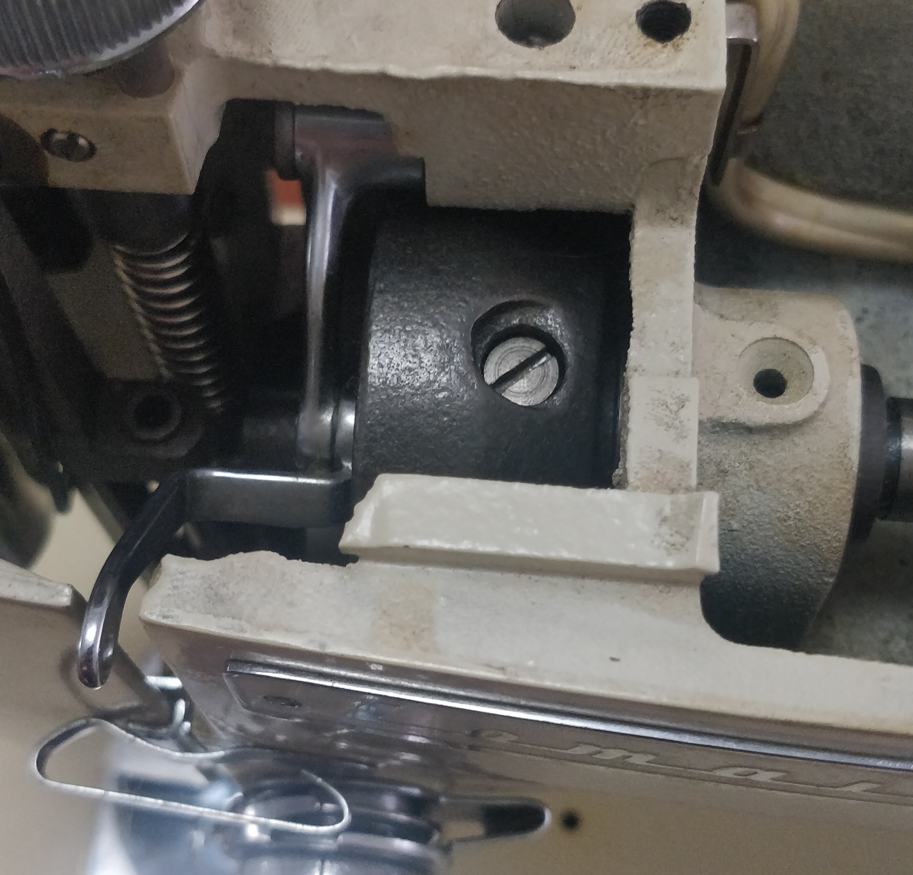

Removing the Gear
The gear was overmoulded onto this aluminium part attached to the main arm shaft.

In order to develop a design, and for the eventual repair, a closer look at the aluminium part is needed. However, the grub screw holding the head cam onto the arm shaft is stuck (presumed loctite).
Attempts at heating the grub screw to break the loctite have failed. The first attempt was to use a soldering iron. The second attempt was to apply a red hot screwdriver to it. As of today, the grub screw is still stuck.